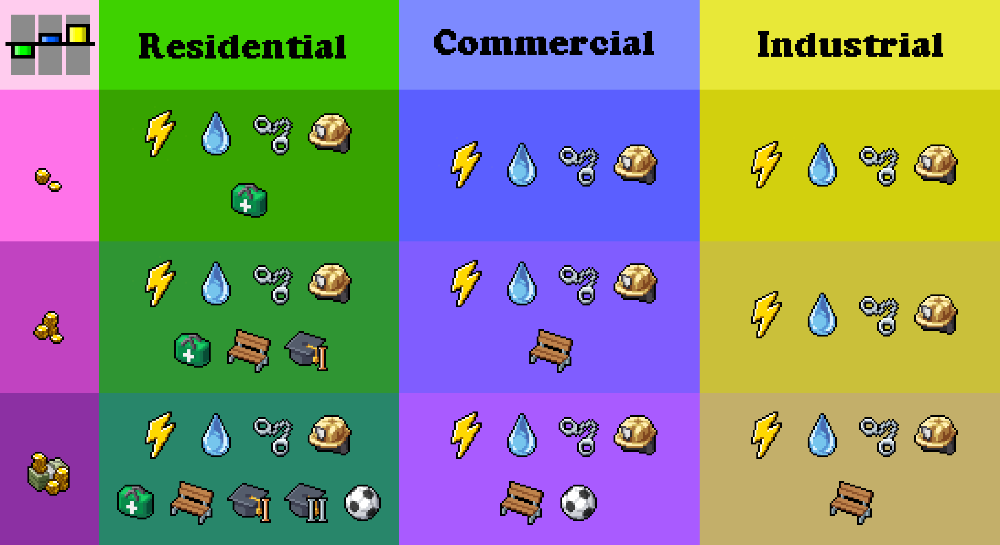
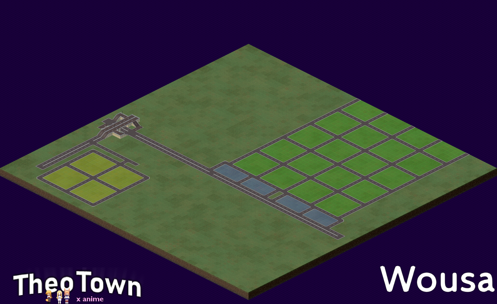
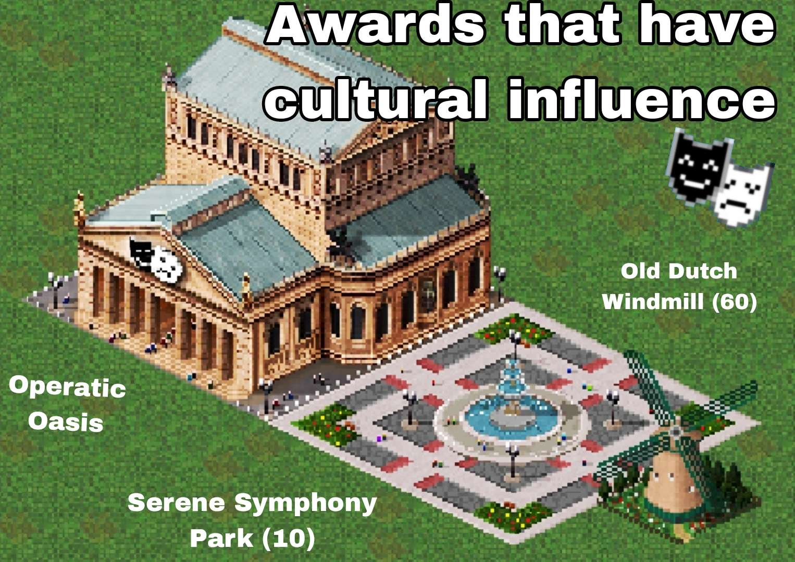
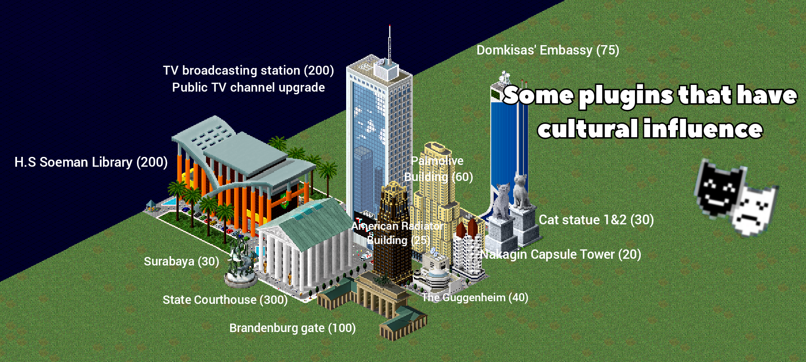
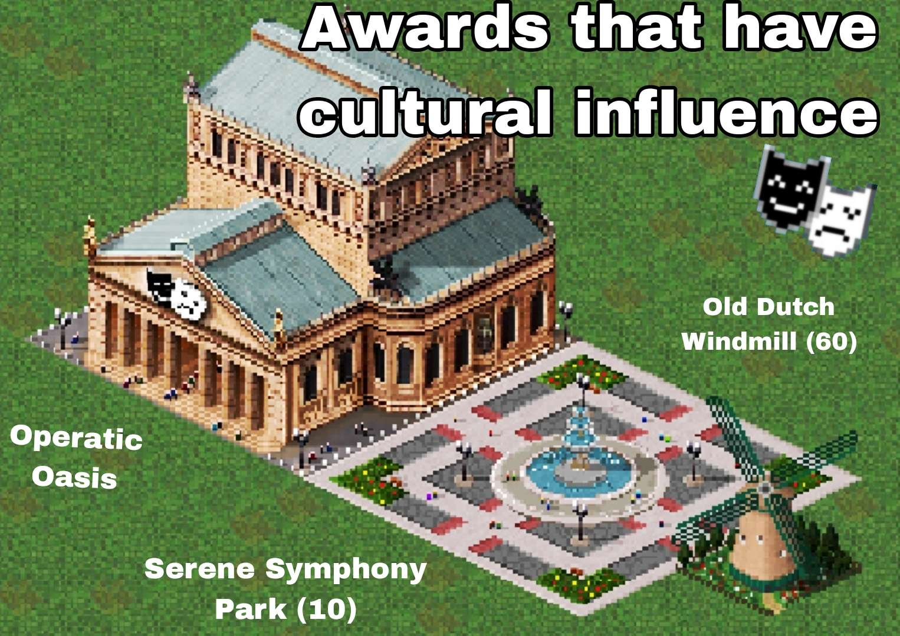
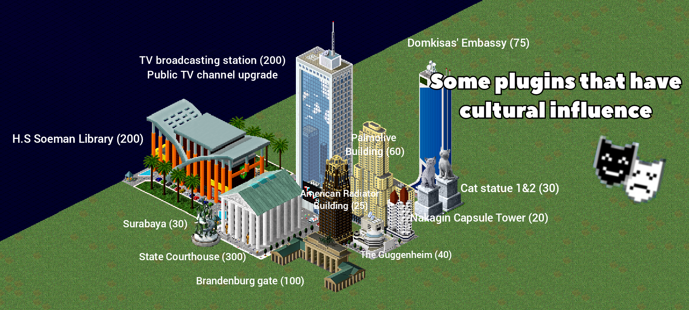
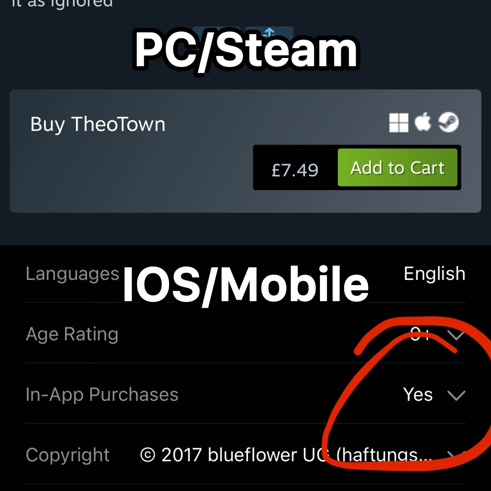

Theotown Fan Wiki
Ringkasan
Theotown adalah game simulasi pembangunan kota dengan gaya klasik, di mana pemain mengatur tata kota, ekonomi, transportasi, dan layanan publik sesuai gaya bermain masing-masing.
Wiki ini adalah wiki penggemar berbahasa Indonesia yang berisi terjemahan, informasi dari sumber resmi, pengalaman bermain, serta tambahan dari komunitas.
Server Discord
- Theotown Resmi
- //Potato's (Slash Potato)
- FTTI (Forum Theotown Indonesia)
- Эrionite's (Arangasit)
- Emeraldo
- BurgerHam Burger Joint
- Österstadt
- The Leaf Community
- Komunitas Arsip Theotown
- Industri Kompleks
- Kamikaze Hellhole
- KRI (KTTCAPI)
- Klub Hadestia
- VPS (Vonark Plugin Server)
- Matfil-15
- 1Code (Jeremiah)
- Boss Gxng
- Sprot Plugin Server
- Slavic Plugin Market
- Timelapse Video
- Strycedar Multiverse
- Naciones De Theotown (RP)
- Tower of Darkness
- Re-Panas Inc.
- Yakka Plugin Center
- Theotown RP
- Pidroid
- Erksmith Swamp Office
- Cosejo Latinoamericano de Plugins
- OBSI and Rap's Planes and Plugins
- Wandrox Plugin Platform
- TCPS HQ
- Marcato's Community
- Ayakucing
- Miuku
- Yan-J
- Ren's Wilderness
- Logvyn
- Cyro Galatic
- Link
Grup/Saluran/Komunitas Whatsapp
Untuk saat ini masih kosong,segera hadir. 😉
Plugin Populer/Sering Dicari
- mdk_813
- Yusuf8a684
- Rockfort
- KINGTUT10101
- Chipper
- Complex Industry
- Some Beach Decoration
- China Railways
- Breakwater
- IKN
- Link
Untuk saat ini masih kosong.
Age of Sail (AOS)
Mengapa ini terjadi?
Pengembang TheoTown telah membuat perubahan besar pada kode hak istimewa plugin di versi terbaru, sehingga plugin lama menjadi tidak kompatibel dengan versi terbaru, yang menyebabkan error.
Apakah ada solusinya?
Ya, tetapi hanya ada satu pilihan sulit: gunakan TheoTown versi sebelum 1.11.78 lebih baik versi di bulan april 2022.. Namun, perlu diingat bahwa jika Anda melakukannya, Anda tidak akan mendapatkan konten TheoTown terbaru. Juga perlu diingat bahwa menghapus instalasi theotown sama saja menghapus data kecuali anda login akun forum atau Facebook. APK versi lama Theotown.
Apakah AOS akan di-update, dan kapan?
Tidak, plugin AOS tidak akan di-update. Pengembang plugin AOS sudah pensiun dari pengembangan plugin TheoTown sejak tahun 2022. Mohon pengertiannya, jika Anda memiliki kontak dengan pengembang tersebut, bahwa mereka berhak menolak permintaan Anda, jadi jangan kecewa.
Saya mengetahui resiko dan tetap akan mengunduhnya.
Cara Pasang Plugin (zip,plugin,ttplugin)
- Buka ikon gir di menu wilayah (kalau pas main kota gak bakal muncul,harus keluar kota dulu)
- Pilih file manager
- Folder Plugins
- Tombol Impor Disini
- Pilih Berkas/File
- Cari file zip,plugin,ttplugin dari plugin yang ingin dipasang.
- Restart Game
Cara Pasang Plugin (mpf)
- Buka ikon gir di menu wilayah (kalau pas main kota gak bakal muncul,harus keluar kota dulu)
- Pilih file manager
- Tombol pengaturan/settings
- Folder managed plugins
- Tombol Impor Disini
- Pilih Berkas/File
- Cari file mpf dari plugin yang ingin dipasang.
- Restart Game
Ekspor/Impor Wilayah
- Buka ikon gir di menu wilayah (kalau pas main kota gak bakal muncul,harus keluar kota dulu)
- Pilih file manager
- Folder regions
- Tombol Impor Disini
- Pilih Folder
- Cari file zip wilayah.
- Ekstrak zip
- Pilih folder wilayah yang di ekstrak
- Restart Game
Untuk Export bisa menggikuti hingga step 3,dilajutkan dengan:
- Pilih Actions/Aksi pada folder wilayah
- Pilih ekspor
Ekspor/Impor Kota Satuan
- Buka ikon gir di menu wilayah (kalau pas main kota gak bakal muncul,harus keluar kota dulu)
- Pilih file manager
- Folder maps
- Tombol Impor Disini
- Pilih Folder
- Cari file .city kota.
- Pilih file tersebut
- Restart Game
Untuk Export bisa menggikuti hingga step 3,dilajutkan dengan:
- Pilih Actions/Aksi pada file kota
- Pilih ekspor
Membuat Wilayah/Kota berdasar peta
Membuat Region Mirip Dunia Nyata dengan Heightmap
Ingin membuat region yang menyerupai lokasi nyata di dunia? Gunakan heightmap.
Langkah-langkah
- Buka situs ini lalu cari lokasi yang kamu inginkan.
- Pastikan warna sudah benar:
- Hitam akan menjadi air
- Putih akan menjadi perbukitan / dataran tinggi
- Ambil screenshot dan ubah namanya (contoh:
example.jpg). - Masukkan gambar tersebut ke folder utama TheoTown (jangan ke subfolder).
- Buka region generator, lalu ketik nama gambar tadi (misalnya
example.jpg). - Nikmati region kustom buatanmu.
Daftar Seed Siap Pakai
Seed tidak sensitif huruf besar/kecil.
Seed “Only”
grassonly— hanya rumputsandonly— hanya pasirsnowonly— hanya saljuwateronly— hanya air
Seed Lokasi Dunia Nyata
Earth— peta bumi tanpa OseaniaUSA— Amerika SerikatUnitedkingdom— InggrisWashington— WashingtonVesuvius— Gunung VesuviusTokyo— TokyoTaal— Gunung TaalStuttgart— StuttgartStuckenborstel— Stuckenborstel (lokasi nyata)Shanghai— ShanghaiSanfrancisco— San FranciscoPetersburg— St. PetersburgNewyork— New YorkNauru— NauruKorea— Semenanjung KoreaKyushu— KyushuHonshu— Jepang (Honshu)Hongkong— Hong KongGrandcanyon— Grand CanyonGalapagos— Kepulauan GalapagosFuji— Gunung FujiEverest— Himalaya (area Everest)Easterisland— Pulau PaskahDalian— DalianCologne— CologneCaspiansea— Laut Kaspia dan sekitarnyaBournemouth— BournemouthBali— BaliAllearth— peta bumi termasuk OseaniaAegeanislands— Kepulauan Aegea
Lainnya
RemainsStay— gambar seekor sloth 🦥JustAnyone— wajah JAFlat— peta datar polos
Berkas Manifest Tidak Ditemukan
Peringatan Missing manifest file. secara sederhana tidak perlu dihiraukan. Namun, perlu dicatat bahwa plugin tanpa plugin manifest tidak dapat digunakan pada wilayah online atau multipemain. Peringatan ini ditujukan kepada pembuat plugin, bukan pemain biasa seperti Anda.
Plugin Tidak Muncul

Tidak semua plugin akan muncul di kategori plugin. Memang, kategori ini memudahkan pemain untuk mencari sesuatu berdasarkan plugin. Namun, plugin di luar store terkadang tidak tercantum di sana. Anda bisa mencari konten plugin di kategori masing-masing. Contohnya, jika plugin berisi dekorasi, carilah di kategori dekorasi game.
Kebijakan Skrip

Peringatan Script Policy secara sederhana adalah opsi bagi pemain untuk memilih script plugin mana yang diperbolehkan. Beberapa plugin memiliki kode Lua.
Rekomendasi Plugin (Oleh DualHD)
Daftar Rekomendasi plugin oleh DualHD (Catatan,Jika kamu tidak menemukan plugin yang ada di daftar,besar kemungkinan itu plugin privat atau telah dihapus):
- German Houses | oleh vönark (vps server)
- Munich Airport | oleh vönark (vps server)
- Austrian Buildings | oleh vönark (vps server)
- Saint Petersburg Buildings v2 | oleh vönark (vps server)
- Dutch buildings | oleh vönark (vps server)
- NewBau | oleh vönark (vps server)
- Swedish buildings | oleh vönark (vps server)
- La Defense | oleh vönark (vps server)
- White Square | oleh vönark (vps server)
- Turning Torso | oleh vönark (vps server)
- Modern (euro) building pack | oleh Some SC4 Fan (Plugin store)
- Amsterdam Prinsengracht | oleh a Dutch Guy (forum)
- Moscow historical buildings | oleh arangasit (Plugin store)
- Verona historical buildings | oleh arangasit (Plugin Store)
- Le Havre panel buildings | oleh arangasit (Plugin store)
- Copenhagen historica buildings | oleh arangasit (Plugin Store)
- Soviet residential buildings | oleh arangasit (Plugin store)
- Le Havre MegaPack | oleh RockFort (forum)
- French Buildings Pack (2.1.2) | oleh RockFort (forum)
- French Houses Pack #2 | oleh RockFort (forum)
- Palais Bénédictine | oleh RockFort (forum)
- Warsaw Palace of Culture and Science | oleh RockFort (forum)
- French Elementary School | oleh RockFort (forum)
- French Public Housing Projects Pack | oleh RockFort (forum)
- Musée des Pêcheries, Fécamp | oleh RockFort (forum)
- Modulable French House | oleh RockFort (forum)
- Mairie de Fécamp | oleh RockFort (forum)
- Gare de Rouen Rive-Droite | oleh RockFort (forum)
- Netherlands Middle School | oleh RockFort (forum)
- Saint Nicolas Church, Ljubljana | oleh RockFort (forum)
- Western Railway Station, Budapest | oleh RockFort (forum)
- Eco-Towers pack (Occitanie Tower) | oleh RockFort (forum)
- Notre Dame de Paris Cathedral | oleh RockFort (forum)
- THE SHARD | oleh Dekuz (Plugin store)
- De Rotterdam | oleh Dekuz (Plugin store)
- Wohnpark Alt-Erlaa | oleh Dekuz (Plugin store)
- Guggenheim museum bilbao | oleh Dekuz (Plugin store)
- Modern Building Package | oleh Dekuz (Plugin store)
- Hungarian auto club HQ | oleh Dekuz (Plugin store)
- Winter Palace | oleh võnark (vps server)
- Frankfurt building pack | oleh võnark (vps server)
- City of London pack | oleh võnark (vps server)
- Churches | oleh võnark (Plugin store)
- Westminster Palace | oleh CERRERA (Plugin store)
- Palace Potocki | oleh Österschmirtz (Plugin store)
- Oslo Royal Palace | oleh Österschmirtz (Plugin store)
- Victorian Train Station | oleh Österschmirtz (Plugin store)
- Tour des Archives, Rouen | oleh Imran M (Plugin store)
- Munich New City Hall | oleh TCPS TEAM (Plugin store)
- Gothic Cathedral | oleh TCPS TEAM (Plugin store)
- Jakarta Cathedral | oleh Lukasbeenhere (Plugin store)
- Parliament of Budapest | oleh kekman (Plugin store)
- Messeturm Frankfurt | oleh kekman (Plugin store)
- Floreasca Sky Tower Bucuresti | oleh kekman (Plugin store)
- Cologne Cathedral | oleh kekman (Plugin store)
- Modulable Shopping Centre | oleh Ttownlover (Plugin store)
- PWC HQ. Oslo | oleh Ttownlover (Plugin store)
- Warsaw Trade Tower | oleh Marco Handres (Plugin Store)
- Hotel Intercontinental Warsaw | oleh Marco Handres (Plugin store)
- The Crystal Palace | oleh tochiito (Plugin store)
- Cinerama Movie Theatre | oleh tochiito (Plugin store)
- The Wedding Tower | oleh tochiito (Plugin store)
- The Leaf Factory Pack | oleh The Leaf (LPC server)
- The Leaf Construction Props Pack | oleh The Leaf (LPC server)
- PBZ Bank | oleh KMr06 (Plugin store)
- The Landmark | oleh KMr06 (Plugin store)
- The MARQ | oleh KMr06 (Plugin store)
- Estella tower | oleh KMr06 (Plugin store)
- CJ Tower | oleh KMr06 (Plugin store)
- VN-PRDC | oleh KMr06 (Plugin store)
- The Landmark | oleh KMr06 (Plugin store)
- International Financial Center | oleh KMr06 (Plugin store)
- Rietpark Building | oleh Walmart Employee (Plugin store)
- Thamrin Nine Tower | oleh NTTPC (Plugin store)
- Astra Tower | oleh matthewfilbert15 (Plugin store)
- Prague Buildings | oleh zaaron (LPC server)
- National Diet Library | oleh zaaron (Plugin store)
- Kaunas Town Hall | oleh zaaron (Plugin store)
- Fischauktionshalle | oleh zaaron (Plugin store)
- Service Expansion | oleh Loboleh (Plugin store)
- European Buildings Expansion | oleh Loboleh (Plugin store)
- Residential Expansion | oleh Loboleh (Plugin store)
- Kulche's Advanced Architecture | oleh Kulche (Plugin store)
- The Maj Dago | oleh RM0419 (Plugin store)
- brussels buildings | oleh ifeelgood (Plugin store)
- soviet buildings | oleh ifeelgood (Plugin store)
Plugin terkait jalan:
- Traffic Lights
- Slow Traffic Package
- Road Markings Package
- Curb plugin
- Indonesia transport pack (for the lines)
- LeoPolis Road Deco Pack
- Road stripes (Forum)
- Alpha Mega DanDM Plugin (Potato Server)
- Advanced Road
- Road stripes
- Diagonal Crossing
- Red line
- (one way)street light
- road sign
- Roadside Trees
- Road damages
- Leopolis Road Deco Pack (Beta)
- Non-Stopping Strips. Crossings
- i13 Road Pack
- Philippines Road Pack
- Custom Roads
- Erin's Road Additions
- Cobblestone roads (Forum)
- One-way diagonals (DM me for the files, the author is perfectly fine with sharing it)
- Complex industries (for the dirt roads)
- Bus Lane
- Invisible road
- One lane street
- Bike lane
- Bridge highway and expressway
- Alley
- New Interchanges And Road v1.7
- Futuristic Road Pack V5.1
- School Zone Road
- Mud Tracks
- One Lane roads
- Rural Roads (Diagonal)
Misc Road related plugins :
- River with sidewalk
- Bus stop decoration updated
- Bridge decorations
- Bridge Frames
Tree/Nature related plugins DualHD use:
- Spruce Trees oleh The26
- Lilac bushes oleh The26
- Birch Trees oleh The26
- Rowan Trees oleh The26
- Japanese shrine decoration oleh Kai's work
- Nature Pack oleh võnark
- Autumn Trees oleh võnark (vps server)
- Just Trees oleh Österschmirtz
- Bus lane oleh Wikipeder (the trees)
- Some SC4 Fan's Trees (v2) oleh Some SC4 Fan's
Credit to DualHD
Membaca Grafik Permintaan
Klik ikon grafik batang di sisi kiri layar untuk melihat demand. Tampilan grafik ini mirip dengan kotak di kiri atas pada gambar referensi.
- Jika batang berada di atas garis, artinya banyak orang ingin pindah ke zona tersebut → tambah/zoning lebih banyak zona itu.
- Jika batang berada di bawah garis, artinya zona tersebut membutuhkan layanan dan fasilitas tambahan.
Kebutuhan layanan untuk setiap jenis zona dan level kekayaan bisa dilihat pada gambar referensi di bawah.
Sandbox Mode
Di Sandbox Mode, demand bisa dimanipulasi sebagian.
- Buka grafik demand, lalu gunakan tombol + atau - untuk menaikkan atau menurunkan demand.
- Garis demand yang penuh tidak otomatis membuat penduduk masuk.
- Kamu tetap harus menyediakan layanan yang dibutuhkan agar populasi bisa bertambah.
Catatan:
Jika semua kebutuhan sudah terpenuhi, tinggi garis demand menentukan seberapa cepat penduduk akan pindah ke zona tersebut.
Keterangan Ikon
Ikon pada gambar menunjukkan kebutuhan layanan berikut (urut dari kiri ke kanan) untuk zona residential:
- Listrik
- Air
- Polisi
- Damkar
- Kesehatan
- Taman
- Pendidikan Dasar
- Pendidikan lanjutan
- Olahraga
Memperbaiki Kemacetan
Direktori Lalu Lintas
Bagian ini berisi beberapa tips tentang cara kerja lalu lintas dan bagaimana merancang kota berdasarkan perilaku tersebut.
Alur Lalu Lintas
Penduduk membutuhkan jalur yang cepat dan efisien dari titik A ke titik B. AI akan memilih jalur terpendek, bukan yang paling cepat.
- Residential → Commercial & Industrial (penduduk berangkat kerja)
- Industrial → Commercial (barang dikirim ke toko)
- Commercial → Industrial (truk kembali ke pabrik asal)
- Industrial & Commercial → Residential (penduduk pulang ke rumah)
Tips Tata Letak Kota
- Zona Industrial dan Commercial sebaiknya dekat dengan jalan utama agar mudah diakses dari seluruh kota.
- Zona Residential sebaiknya dekat dengan Commercial, namun agak jauh dari Industrial karena polusi.
- Gunakan kombinasi jalan satu arah dan dua arah di zona Residential untuk menjaga lalu lintas tetap rapi.
Berikut contoh tata letak kota yang bisa kamu gunakan sebagai referensi:

Memperbaiki Permainan Ngelag

Pergi ke pengaturan,lalu cari pengaturan diatas.
- Matikan zoom halus di kontrol
- Gunakkan mode hemat energi jika masih lag
- Gunakan mode hemat energibplus jika tetap masih lag
Cara Ke Bulan (Dan Kembali)
Bingung dengan cara kerja DSA? Cek video ini. Ingin tahu cara meningkatkan suplai roket?
Pastikan kamu membangun industri minyak di sekitar landasan roket. Contoh bangunan ada pada gambar di bawah ini.

Untuk kembali ke bulan,bisa cek kota satuan.
Cara Klaim Kode Redeem

Kode publik: chrs05 dan windah
Kode wajib huruf kecil semua.
Kebahagiaan Budaya
 



Pengaruh Bangunan (Influence)
Angka yang tertera di sebelah nama bangunan menunjukkan jumlah influence yang diberikan oleh bangunan tersebut.
Semua bangunan yang berada di kategori Landmarks dan Awards adalah konten vanilla (bawaan game).
Landmarks membutuhkan diamond untuk ditempatkan (khusus versi mobile).
Plugin yang ditampilkan pada gambar hanyalah sebagian dari plugin yang dapat memberikan cultural influence.
Kamu bisa menemukan lebih banyak plugin serupa di plugin store.
Kebahagiaan Transportasi
Untuk saat ini masih kosong. Segera hadir 😉
Kebahagiaan Edukasi
Untuk saat ini masih kosong. Segera hadir 😉
Membuat Pelabuhan Bawaan

Bangunan pelabuhan akan muncul,sisakan 1 petak pantai untuk bangunan pelabuhan. bangunan pelabuhan akan muncul jika ada permintaan zona industri T.
Perbedaan Steam & Mobile

Versi Mobile
Di mobile, TheoTown bisa diunduh secara gratis, tetapi memiliki microtransaction. Model permainan ini dikenal sebagai Pay To Earn (P2E).
Versi Steam
Sementara itu di Steam, TheoTown bersifat berbayar untuk diakses, namun seluruh konten di dalam game sudah termasuk tanpa transaksi tambahan. Model ini disebut Pay To Play (P2P).
Perbedaan P2E dan P2P
Perbedaan utama terletak pada cara pemain mengakses dan mendapatkan konten di dalam game.
Run Out of Memory

Error: java.lang.OutOfMemoryError: Java heap space
Error ini berarti game kehabisan memori (RAM) saat memproses aksi atau permintaan tertentu.
Solusi di Mobile
Di perangkat mobile, opsi perbaikannya cukup terbatas.
- Tutup aplikasi lain yang berjalan di background
- Pastikan hanya game yang sedang aktif
Cara ini bisa membantu, tapi tidak selalu menjamin error hilang.
Solusi di PC
Di PC, kamu bisa menambah batas memori yang boleh digunakan game lewat launch argument.
Contoh:
-Xmx4GArtinya, game diizinkan menggunakan hingga 4 GB RAM.
Catatan penting:
- Pastikan RAM kamu cukup tersedia
- Disarankan tidak mengalokasikan lebih dari 50% total RAM sistem
Cek Versi Java (PC)
Jika error masih muncul:
- Pastikan kamu menggunakan Java 64-bit
- Jika masih 32-bit, game hanya bisa memakai maksimal 2 GB RAM, berapa pun nilai -Xmx yang kamu set
Tautan Berguna
Tutorial Plugin
Segera Hadir
Example Summary
Untuk saat ini masih kosong. Segera Hadir 😉